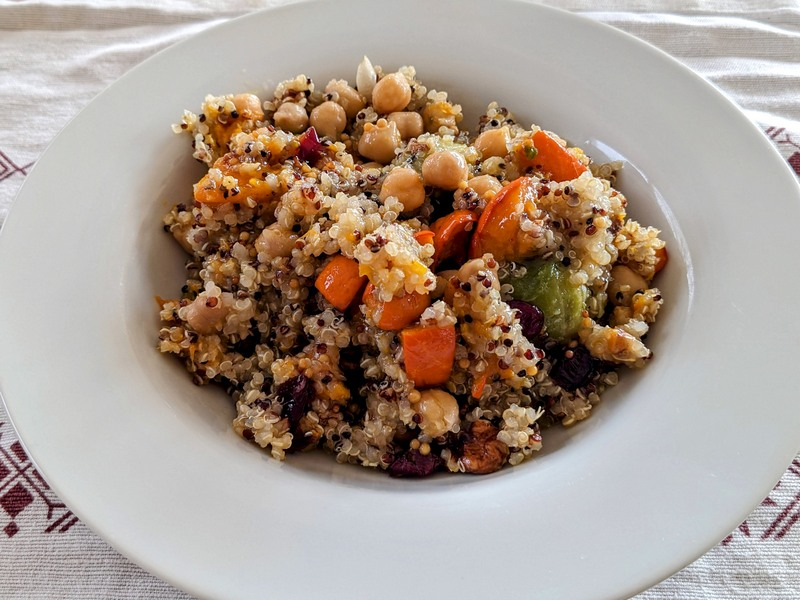

Čím jiným přivítat nový rok na blogu, než novým receptem :-)! Tip na tento lahodný salát, který přímo volá “podzim”, jsem objevila v magazínu Albert, a hned jsem si ho zamilovala. Je to to pravé jídlo pro dny, kdy se mi nechce vyvařovat nic složitého a zároveň mám chuť trochu odlehčit jídelníček - takže pro tohle povánoční období úplně ideální.
- 1/2 dýně hokkaido, pokrájené na kostičky
- 1-2 lžíce olivového oleje
- sůl a pepř
- 100g quinoy
- 350g růžičkové kapusty
- 1 konzerva cizrny
- 45g vlašských ořechů
- hrst sušených brusinek
Na zálivku:
- 120ml olivového oleje
- 120ml tekutého medu
- 60ml vinného octa
- 1-2 lžíce francouzské hrubozrnné hořčice
- sůl a pepř
Nakrájenou dýni vyskládáme na plech vyložený pečicím papírem, pokapeme olejem, osolíme a opepříme a pečeme 30-40 minut doměkka. Quinou v cedníku několikrát propláchneme, v hrnci zalijeme 120ml vody, osolíme a přivedeme k varu. Vaříme asi 15 minut, aby se veškerá tekutina vsákla a quinoa byla měkká. Kapustičky propláchneme, rozpůlíme a nakrájíme na co nejtenčí plátky a vaříme v páře 10-15 minut. Mezitím si umícháme všechny suroviny na zálivku. Nakonec v míse smícháme upečenou dýni, kapustu, quinou, cizrnu, ořechy a brusinky. Podáváme ještě teplé, pokapané zálivkou.
